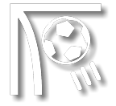

Andrés Nicolás D'Alessandro
Mediocampista argentino, número 10 e ídolo del Internacional
01
Perfil
Si la trayectoria de D'Ale no es exactamente un tango, lleno de drama y lágrimas, como es común entre jugadores de fútbol, también no puede resumirse en las mariposas de Fito Páez. Sus padres, Gladys y Eduardo, lucharon temprano para realizar el sueño del hijo. "Siempre dicen que sólo quería ver la bola; jugaba en la calle, en casa y en cualquier lugar... Trabajaban, pero hacían un esfuerzo muy grande por darme la oportunidad de jugar al fútbol", recuerda. Conozca más de D'Alessandro, de su primer toque en la pelota a las glorias conquistadas en los campos alrededor del mundo.
Ver la historia de la estrella de fútbol02
Números de la carrera
-
17 Títulos GANADOS
-

Más de 100 GOLES
-
Rey de AMÉRICA/2010
03
Sigue la estrella en las redes sociales
04